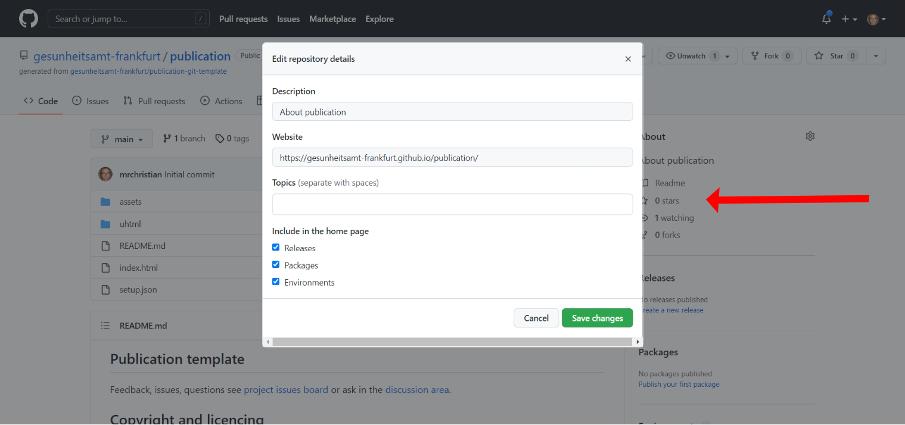

Step 1: Make a Publication Git Repository and Website
The Git repository (repo) is the storage location of your outputted publication which is connected to the net. A website can also be made from the repo with a selected content being made public. When your repo is updated, so is your website.
<Add picture example of a. Git Repo and b. website. b is a select presentation of a.>
About
The repository uses Git technology which allows for versioning of your publication.
We save to GitHub and GitLab (Perkel 2016). GitLab can be used as GitLab.com or as a self-hosted instance for public and private publications, or for staging publications for later transfer to another repo. We use GitLab Community Edition (GitLab CE) for self-hosting which is open-source software. GitHub is not open-source but is useful for publication distribution and visibility.
Git logoOctocat: GitHub's mascotGitLab logo
Step-by-step guide
These instructions are for using GitHub. The principles are the same for GitLub.
These steps will allow you to create a repository to for your publication with the option for a website.
Create a repo
Use a GitHub Template Repository (Repo)
You will create a prepopulated GitHub template repository for you publication. The template repo contains componts for creating the website and providing links to the other publication formats in the website.
Navigate to the template repo and click the green button 'Use this template'.
Then choose where you will make the new repo and its name. Once chosen click 'Create repository from this template'.
Where to save your repo? In GitHub you can save repos with organisations or in your personal account, select this under the field labeled 'Owner'.
How to name your repo? The name of the repo will be its display name and URL address. It is good practice to adopt a naming convention style to be inline with other publications, this might be a short title, or even an acronym. Note it is good practice to use only lowercase in the name as the URL is case sensitive. Names can be changed at any time but it will change any associated URLs.
Note: Repo names can be changed at any time, but this will change the website URL to be the new name and you must remember to update the URL in other places where you have used the URL address.
Other settings: You can give the repo a description; make the repo public is the default, and the click greed button.
Create a website
GitHub has a service called GitHub Pages. This creates free websites on the domain github.io or you can use your own custom domain. The default URL address pattern is https://organisation-name.github.io/publication-name/. The content from your repo will be available on the URL.
Note: Websites can be given custom domain names. You will need to consult GitHub documentation to enable this feature.
This is a two step process.
Step 1:
Navigate to 'Settings' in the top horizontal options. In settings on the left menu select 'Pages'. In the dialog in the main page use the following settings: Select branch - main; select folder - root, and; click save. This will complete the site creation and give you a URL for your website. Copy the URL and you can then use it to add address to front end of the repo.
To paste the site name into the front end of your repo first go to the front end of the repo by clicking <code>. To the right click the cog next to About and in here you can paste in the URL and save.

You will now have a website and the address appears top right.
Your website will look like this. Currently the site will contain benchmark content to demonstate that layout features are working correctly. This content will be removed once you output your publication.
Step 2:
To enable the Paginated Web version of your publication the repo address needs to be added to the setup.json file in the top level of your repo.
Edit the file setup.json and add in the organisation name and repo name into line 3 and save at the bottom of the page. "repoURL": "https://github.com/organisation-name/publication-name/".
Step 1 completion: What's next?
Now that you have your repo and website setup, next you will set-up a book project in Fidus Writer and connect it to your Git repo, this will allow you to output book files from Fidus Writer to Git.
Git is open-source software that both GitHub and GitLab are built on – think of it as a 'time machine for code' and all that could do.